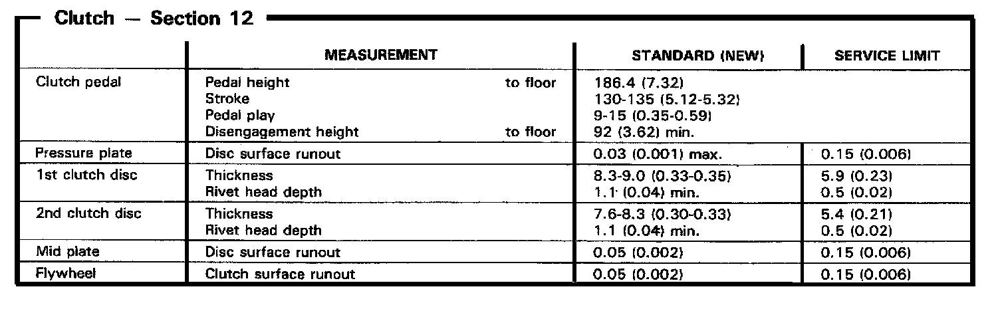
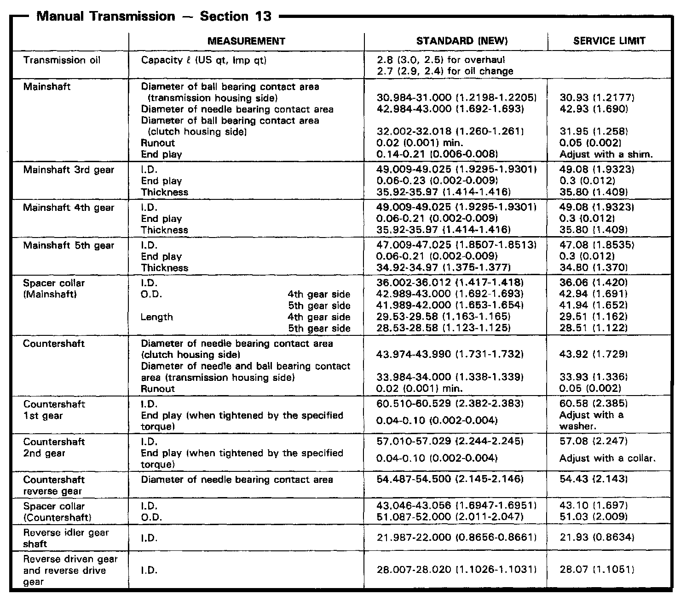
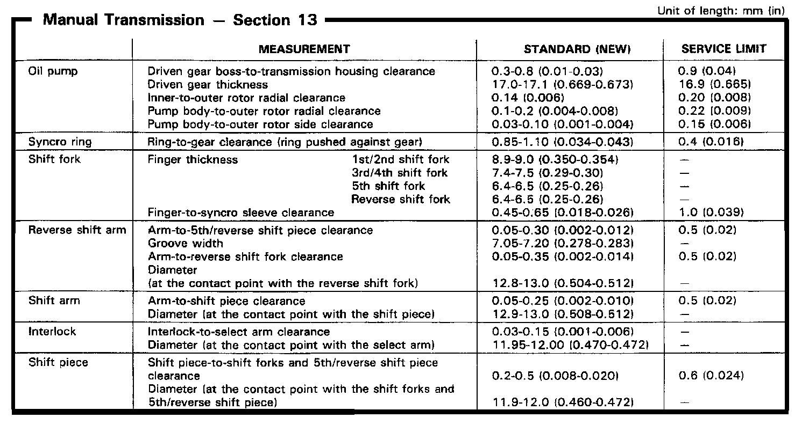
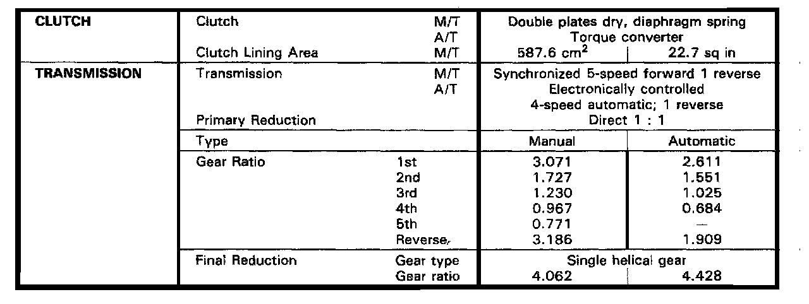

M/T Technical Data
J4A4 5-spd M/T, Clutch Assembly Measurements:

J4A4 5-spd M/T, Mainshaft/Countershaft Measurements:

J4A4 5-spd M/T, Oil Pump, Shift Arm & Shift Fork:

J4A4 5-spd M/T, Transmission Gear Ratios:
